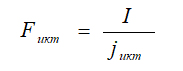
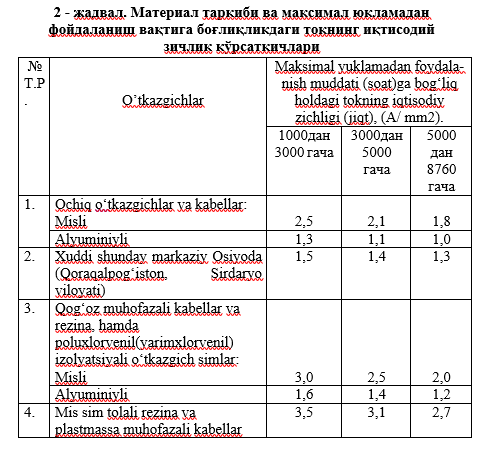
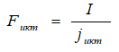
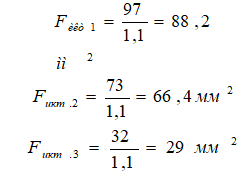
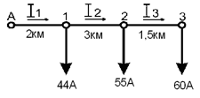
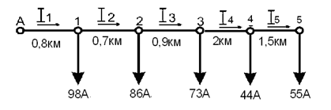
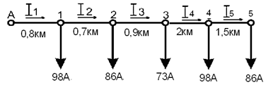

Elektr energiyasining tannarxiga, tarmoqlarini loyihalash paytida asosiy ko‘rsatkichlardan biri
bo‘lganligi sababli jiddiy e’tibor qaratiladi. Bu esa o‘z navbatida elektr energiyasining qancha miqdori
elektr tarmog‘ida foydali (sarf) va foydasiz (isrof) ishlatilishiga bog‘liq.
Uzatilgan elektr energiyasining tannarxini aniqlash uchun jadvallardagi ma’lumotlar, egri chizziqli
nomogrammalar va hisob formulalari ishlatiladi.
Iqtisodiy ko‘rsatkichlarni baholashda elektr o‘tkazgichdan o‘tuvchi tokning iqtisodiy zichligi
(jiqt)
ko‘rsatkichi o‘rinli sanaladi. Uning qiymati material tarkibidagi tok o‘tkazuvchi zarrachalar
(elektronlar)ning o‘tkazgich yuzasi va hajmi orqali zaryad tashuvchanlik (tok o‘tkazuvchanlik) miqdori
bilan izohlanadi.
“Elektr uskunalardan foydalanish qoidalari”ga ko‘ra tokning iqtisodiy zichligi, maksimal aktiv
yuklamadan foydalanish vaqtiga bog‘liq va u 2 – jadvalda berilgan.
Tokning iqtisodiy zichligi (j иқт)ni bilgan holda o‘tkazgichning iqtisodiy kesimi (Fiqt)
quyidagi
formuladan topish mumkin:

Maksimal yuklamadan foydalanish vaqti, yil davomidagi o‘tkazgichning qancha muddat maksimal yuklama
(tok, aktiv quvvat) tashilishini baholovchi ko‘rsatkich hisoblanadi. Maksimal yuklamadan foydalanish
vaqti 1000 ÷ 8760 soat bo‘lishi mumkin.
Tokning iqtisodiy zichligi o‘tkazgichning ochiq yoki izolyatsiyalanganligiga, ochiq havoda, bino
ichida,
transheyada, kabel kanallarida va h.k. jaylardan o‘tkazilganligiga qarab o‘zgarishi mumkin.
Muhitning ta’siri o‘tkazgichlardagi haroratning o‘zgarishi bilan bog‘liq bo‘lib, haroratning
belgilangan
darajadan ortishi o‘tkazuvchanlikning pasayishiga olib kelishi mumkin. Shu sababli o‘tkazgich ochiq
havodan qanchalik ko‘p o‘tgan bo‘lsa undagi o‘tkazuvchanlik shunchalik yuqori bo‘ladi.

Berilgan: Obyektdagi elektr istemolchilarning yuklamalari, oraliq masofalari va tartib
raqami 2 - rasmda
keltirilgan. Elektr iste’molchilarning yillik maksimal yuklamadan foydalanish muddati Tmax = 3600 soat.
Hisoblang: 2 - rasmdagi sxema asosida alyuminiy o‘tkazgich simidan qurilgan kuchlanishi 0,4 kV.li havo
liniyasidagi o‘tkazgich simning kesimini tokning iqtisodiy zichligi asosida toping.
2 - rasm. Istemolchilar yuklamasining taqsimlanish sxemasi
Tarmoq bo‘limlarida tokning taqsimlanishini hisoblash:
I1 = 24 + 41 + 32 = 97 А;
I2 = 41 + 32 = 73 А ;
I3 = 32 А
O‘tkazgich kesimni aniqlash maqsadida o‘tkazgichning iqtisodiy kesimini hisoblash formulasidan
foydalanamiz:

2. Mazkur formula yordamida barcha bo‘limlar uchun iqtisodiy kesimlarni hisolaymiz. U, quyidagi
ko‘rinishga keladi:

2 - jadvaldan o‘tkazgichning materiali va maksimal yuklamadan foydalanish vaqti (Тmax)ga qarab jэкт ning
qiymatini tanlaymiz
1. Berilgan: Kuchlanishi 380 V, yuklamalari quyidagi rasmda keltirilgan va
maksimal
yuklamadan foydalanish muddati Тmax = 1200 soat/yil bo‘lgan elektr tarmog‘i keltirilgan.
Hisoblang: obyektlar uchun mis materialidan qurilgan havo liniyasidagi o‘tkazgich kesimini
tokning
iqtisoldiy zichligi asosida hisoblang.

2. Berilgan: Kuchlanishi 6 kV, yuklamalari quyidagi rasmda keltirilgan va maksimal yuklamadan
foydalanish muddati Тmax = 2800 soat soat/yil bo‘lgan elektr tarmog‘i keltirilgan.
Hisoblang: obyektlar uchun alyuminiy materialidan qurilgan havo liniyasidagi o‘tkazgich kesimini tokning
iqtisoldiy zichligi asosida hisoblang.

3. Berilgan: Kuchlanishi 10 kV, yuklamalari quyidagi rasmda keltirilgan va maksimal yuklamadan
foydalanish muddati Т max = 3800 soat soat/yil bo‘lgan elektr tarmog‘i keltirilgan.
Hisoblang: obyektlar uchun alyuminiy materialidan qurilgan havo liniyasidagi o‘tkazgich kesimini tokning
iqtisoldiy zichligi asosida hisoblang.
